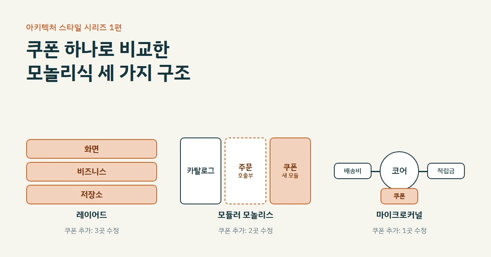
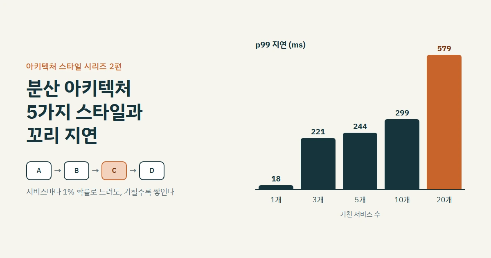
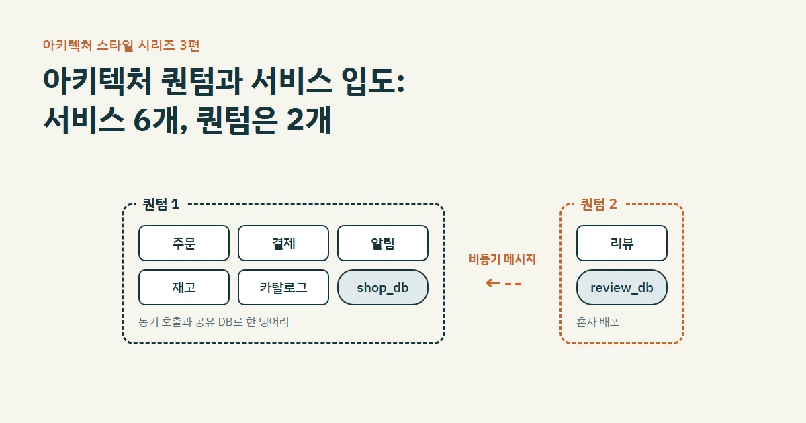
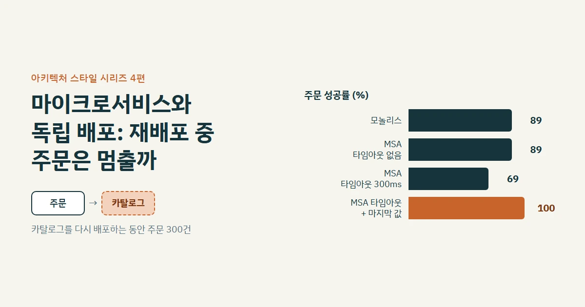

dev-notes
TypeScript·Node.js 백엔드 개발자가 소프트웨어 아키텍처를 공부하며 남기는 학습 노트
아키텍처 스타일 시리즈

1편
레이어드 vs 모듈러 모놀리스 vs 마이크로커널: 쿠폰 기능 하나로 비교하기
온라인 서점에 쿠폰 할인을 추가하는 예제로 레이어드, 모듈러 모놀리스, 마이크로커널의 분할 기준과 변경 범위, 트레이드오프를 비교한 학습 노트입니다.

2편
분산 아키텍처 5가지 스타일과 꼬리 지연: p99로 본 서비스 분리의 비용
서비스 기반, 이벤트 드리븐, 스페이스 기반, 오케스트레이션 SOA, 마이크로서비스의 장단점을 비교하고, TypeScript 시뮬레이션으로 서비스 수에 따라 p99 꼬리 지연이 커지는 과정을 확인한 학습 노트입니다.

3편
아키텍처 퀀텀과 서비스 입도: 유니온 파인드로 퀀텀 세기
서비스를 얼마나 잘게 나눌지 정하는 기준인 아키텍처 퀀텀과 입도를 온라인 서점 사례로 정리하고, TypeScript 유니온 파인드로 퀀텀 수를 계산해 호출 방식과 DB 분리에 따른 변화를 확인한 학습 노트입니다.

4편
마이크로서비스와 독립 배포: 카탈로그를 다시 배포하는 동안 주문은 멈출까
모놀리스의 배포와 확장 한계에서 출발해 마이크로서비스의 정의와 아홉 가지 특징, 독립 배포와 콘웨이 법칙을 정리하고, 카탈로그를 다시 배포하는 동안 주문 요청이 어떻게 되는지 TypeScript 프로세스 실험으로 확인한 학습 노트입니다.